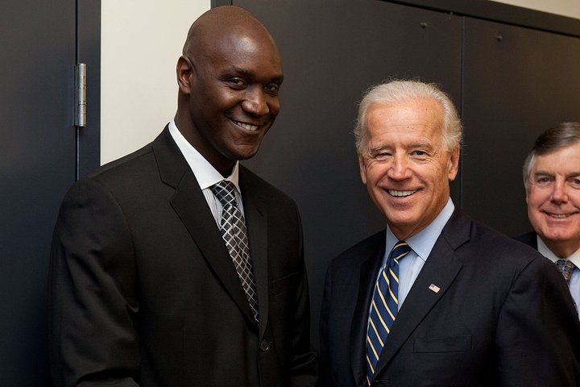

In a surprising move President Biden asked freshman Congressman Mitchell Green to be a part of his cabinet as the Admiinistrator of the Small Business Administration. Congressman Green will be replacing out going Administrator Kira Nerys who is retiring. President Biden selected Congressman Green because he was a very successful small businessman before he ran for Congress owning a chain of artismal butcher shops in major cities around the country. Congressman Green said "I hope to increase opportunities for minorities and women in my new post. Small business is the heartbeat of America. The original american dream was to own your own business and be your own boss. I think the country should do everything in it's power to make that a reality for as many people who still have that dream."

"Owned by Mitchell Green